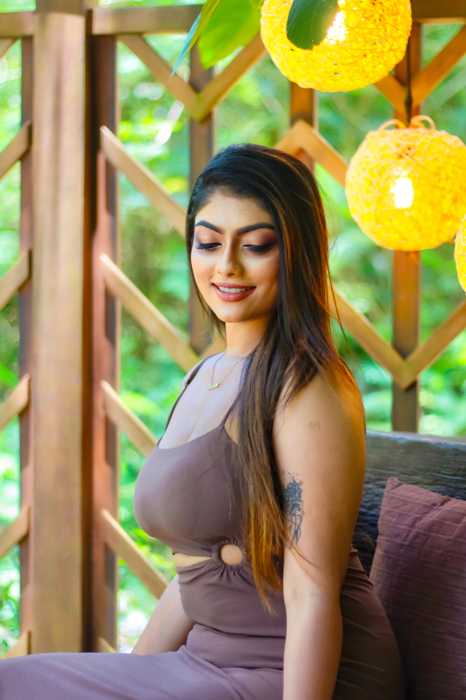

Portrait Gallery
Expressive Portraiture
Capturing personality through natural expressions and authentic moments

Environmental Portraits
Using location and context to enhance the storytelling in portraits

Creative Composition
Artistic framing and perspective to create visually compelling images

Dramatic Lighting
Using light and shadow to create mood and dimension in portraits

Fashion Forward
Style-focused portraits that highlight personality and fashion sense

Authentic Moments
Capturing genuine expressions that reveal true character